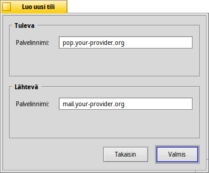
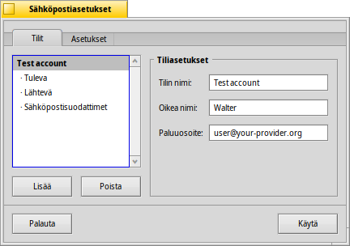
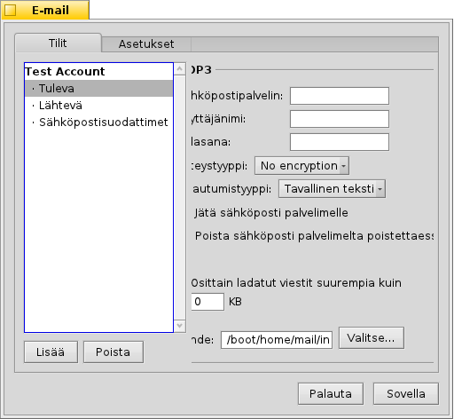
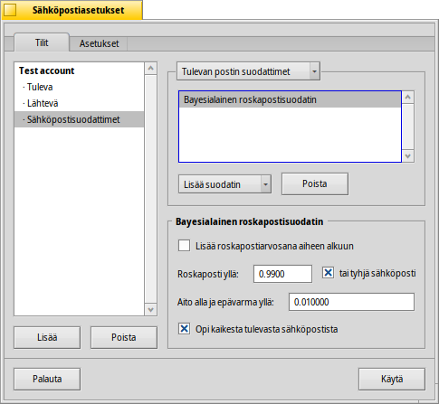
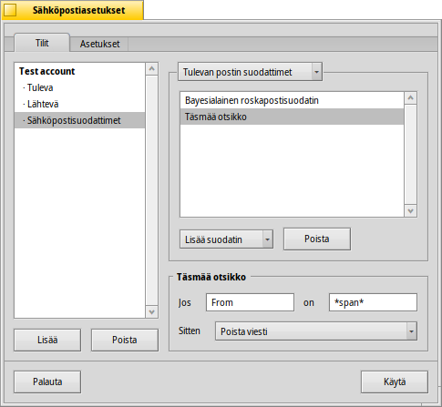
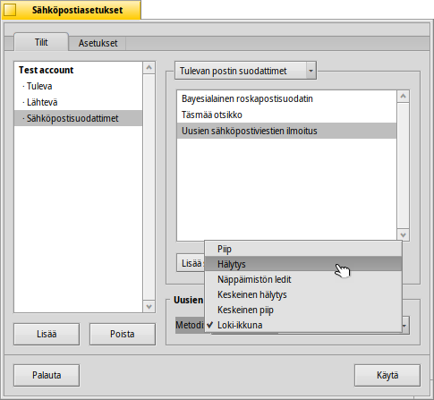
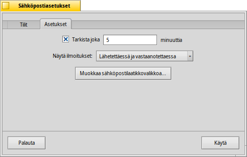
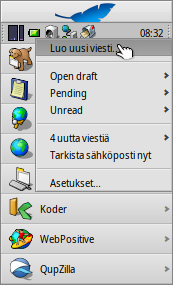

Suomi
Suomi Français
Français Deutsch
Deutsch Italiano
Italiano Русский
Русский Español
Español Svenska
Svenska 日本語
日本語 Українська
Українська 中文 ［中文］
中文 ［中文］ Português
Português Slovenčina
Slovenčina Magyar
Magyar Português (Brazil)
Português (Brazil) English
English Sähköposti
Sähköposti
| Työpöytäpalkki | ||
| Sijainti | /boot/system/preferences/E-mail | |
| Asetukset | ~/config/settings/Mail/* |
Haiku tarjoaa järjestelmän, joka noutaa sähköpostia säännöllisesti Sähköpostipalvelun kautta (tunnetaan myös nimellä mail_daemon) ja tallentaa jokaisen sähköpostiviestin yksittäisenä tekstitiedostona. Se jäsentää sähköpostiviestin ja täyttää sen attribuutit kaikilla välttämättömillä otsaketiedoilla, kuten lähettäjä, vastaanottaja, aihe ja viestin lukemistila. Nyt sinä tai mikä tahansa sovellus voi kysyä sitä. Tämä järjestelmä tekee sähköpostiasiakasohjelman vaihtamisen helpoksi, koska kaikki tiedot ja asetuksesi pysyvät samana.
Asetus on tehty sähköpostiasetuspaneelissa.
 Uuden sähköpostitilin luominen
Uuden sähköpostitilin luominen
Käykäämme sähköpostitilin asetusprosessi lävitse.
Aloitat napsauttamalla -painiketta, mikä luo uuden, nimeämättömän tilin. Tämä avaa paneelin, jossa täytät tilitietosi:
Ensimmäiseksi asetat sen millä yhteyskäytännöllä vastaanotat sähköpostisi, joko -yhteyskäytännöllä tai -yhteyskäytännöllä.
Nyt kirjoitat sähköpostiosoitteesi, kirjautumisnimesi ja salasanasi sekä annat sen tilinimen, jonka alla se tunnetaan Haikussa ja oikean nimesi.
Jos tilisi on pääsähköpostitarjoajalta, Haiku jo tietää kaikki tekniset yksityiskohdat kuten palvelimen IP-osoitteet. Jos näin ei ole laita, painikkeen napsauttaminen avaa toisen ikkunan näiden tietojen kirjoittamiseksi manuaalisesti:
Asetat ensiksi palvelinnimen, kirjautumistyypin ja yhteystyypin tulevalle sähköpostille ja sen alla lähtevälle sähköpostille. Sinun pitäisi löytää tarpeelliset tiedot sähköpostitarjoajasi webbisivulta.
Katso alla lisätietoja eri asetuksista ja lisävalitsimista.
Tiliasetukset
Valitsemalla tilin nimen vasemmanpuoleisesta luettelosta voit vaihtaa joitakin yleisiä asetuksia:
Tilinimi on nimi, joka näytetään esimerkiksi sähköpostiasetusten tililuettelossa. Oikea nimi on se nimi, jonka joku näkee, kun hän saa sähköpostia sinulta. Paluuosoite on sähköpostiosoite, jota käytetään, kun joku vastaa sähköpostiisi. Normaalisti se on sama osoite, josta olet lähettänyt sähköpostiviestisi.
Jos haluat käyttää sähköpostitiliäsi vain joko lähettämiseen tai vastaanottamiseen, voit aktivoida/poistaa aktivoinnin käyttämällä hiiren oikeaa painiketta tilin nimen kohdalla vasemmanpuoleisessa luettelossa. mikä asettaa hyväksymismerkin vastaavasti.
Lisää saapuvan sähköpostin asetuksista
Napsauta painiketta tilin nimen kohdalla sen asettamiseksi kuinka sähköpostia vastaanotetaan.
Ensimmäisenä on -osoite tulevalle sähköpostille. Jos sähköpostitarjoajasi haluaa sinun kirjautuvat tiettyyn porttiin, voit lisätä sen osoitteeseen, erotettuna kaksoispisteellä. Esimerkiksi pop.your-provider.org:1400.
Seuraavaksi kirjoitat kirjautumistiedot: kirjautumisnimi ja salasana, ja vaihdat kirjautumistyypin, jos se on välttämätöntä, oletusarvosta todentamista varten -tyypiksi.
Jos käytät POP3-yhteyskäytäntöä ja noudat tämän tilin sähköpostiviestit eri tietokoneilta, saatat haluta aktivoida valitsimen ja vain paikallisesti.
Jos käytät sen sijaan IMAP-yhteyskäytäntöä, sinulla on valitsin paikallisesti. Voit määritellä vain synkronoidaksesi tietyn kansion ja sen alikansiot.
Voit myös valita vain tietty koko. Tällä saat näkyviin vain otsakkeen ja voit päättää, että haluatko ladata loput viestistä plus mahdolliseet liitteet sen jälkeen kun olet nähnyt aiheen ja kuka on lähettänyt viestin. Tämä on hyödyllinen hitailla yhteyksillä.
Voit vaihtaa tulevan sähköpostilaatikkosi Kohteen (oletus: /boot/home/mail/in/), mikä on hyödyllinen, jos haluat erotella eri tilien sähköpostit omiin kansioihin. Kyselyt sallivat sinun kuitenkin lajitella sanomat yhtä helposti.
Lisää lähtevän sähköpostin asetuksista
Napsauta tilin nimen kohdalla sen asettamiseksi, kuinka sähköpostiviestit lähetetään.

Ensimmäisenä on SMTP-palvelinosoite lähtevää sähköpostia varten. Kuten edellä tulevalle sähköpostin palvelimelle, voit käyttää tiettyä porttia, jos on tarvetta. Esimerkiksi mail.your-provider.org:1200.
Jos sinun on kirjauduttava, voit vaihtaa kirjautumistyypin -valikosta ja kirjoittaa käyttäjänimen ja salasanan ylle. Toista tyyppiä käyttävät sähköpostitarjoajat, jotka haluavat tunnistaa sähköposti lähettäjän.
Kuten tulevassa sähköpostissa, voin myös vaihtaa lähtevän sähköpostilaatikon kohteen (oletus: /boot/home/mail/out/).
Ilmoitukset ja muut sähköpostisuodattimet
Ilmoitukset vasta saapuneista sähköpostiviesteistä ja menetelmät sähköpostiviestien lajittelemiseksi ja suodattamiseksi löytyvät valikosta tilin nimen alapuolelta. Voit lisätä minkä tahansa määrän suodattimia, jotka suoritetaan peräkkäin yksi kerrallaan ja järjestään en uudelleen raahaamalla ja pudottamalla ne uuteen sijaintiinsa.
Nykyisin siellä on kolme , jotka voit lisätä. Suodattimen lisäämisen jälkeen voit valita sen nähdäksesi suodattimen valitsimet.
Roskapostisuodatin (AGMS Bayesian)

Roskapostisuodatin käyttää tilastollisia menetelmiä sähköpostiviestien luokittelemiseksi ei-halutuksi roskapostiksi. Se liittää arvon välillä 0 ja 1 siihen ja voit päättää, mitkä ovat rajat aidolle sähköpostiviestille ja mitä pidetään roskapostina.
Sinulla on roskapostiarvosana Aihe-rivin alussa.
Roskapostisuodatin voi myös oppia tulevista sähköpostiviesteistä. Tietysti sinun on opetettava sitä lajittelemalla pois väärät positiiviset - sähköpostiviestit, jotka on vahingossa merkitty roskapostiksi. Löydät lisätietoja kun keskustelemme sovelluksesta Sähköposti.
Seuraavan kanssa kykenet automaattisesti lajittelemaan havaitut roskapostilähetykset.
Sääntösuodatin

Tämä suodatin vertaa sähköpostiotsaketta hakumalliin ja suorittaa joitakin toimintoja asettamiesi sääntöjen mukaan.
Ensimmäisellä tekstikentällä määrittelet, mitä otsaketta vastaan tarkistus tehdään. Nämä ovat käytettävissä:
| lähettäjän nimi | ||
| lähettäjän sähköpostiosoite | ||
| sähköpostiosoitteesi (eri jokaiselle sähköpostitilille) | ||
| sähköpostiosoite, johon vastaukset lähetetään | ||
| päivämäärä ja kellonaika, jolloin sähköpostiviesti vastaanotettiin | ||
| aiherivi | ||
| kaikkien niiden sähköpostiosoitteet, jotka saavat viestin kopion | ||
| sähköpostitilin nimi | ||
| Sähköpostin nykyinen tila. Normaalisti tämä voi olla "Luettu", "Vastattu", "Lähetetty", "Lähetetty edelleen", "Uusi", tai mitä tahansa, mitä olet määritellyt itse. Kuitenkin, jos et muuta sitä itse suodattimessa, se on aina "Uusi" sen jälkeen kun sähköpostipalvelu nouti sähköpostiviestin. | ||
| lähettäjän sähköpostiohjelman asettama (esimerkiksi "kiireellinen") | ||
| olennaisesti sama kuin "Aihe", mutta ilman edeltäviä merkintöjä Vastaus: tai Edelleenlähetys: | ||
| riippuen siitä, miten roskapostisuodatin luokittelee sen, tämä on joko tyhjä (jos epävarma) tai sisältää sanan "Aito" tai "Roskaposti" | ||
| tämä on numeerinen arvio, jonka roskapostisuodatin liittää sähköpostiviestiin. Ne näytetään tieteellisellä merkintätavalla, missä 1.065e-12 käännetään luvuksi 1.065 jaetuna 10:llä ja korotettuna 12. potenssiinr, mistä tässä tapauksessa tulee 0.000000000001065 (piste tarkoittaa desimaalipilkkua). |
Toinen tekstikenttä sisältää hakumallisi. Se hyväksyy säännölliset lausekkeet, mikä antaa sille joustavuuden samalla kun se tekee siitä valitettavasti mutkikkaamman. Lue hiukan siitä, koska se on sen arvoinen ja yksinkertaiset hakumallit eivät ole niin mutkikkaita ollenkaan.
Sen alapuolisessa ponnahdusvalikossa liität toiminnon kun hakumalli täsmää. Voit siirtää tai poistaa sähköpostiviestin, asettaa tilaksi "Luettu" tai jotain muuta tai asettaa sähköpostitili, jolla vastaat.
Ilmoitus uudesta sähköpostiviestistä

Voit valita useita tapoja, millä tavoin sinulle ilmoitetaan vasta saapuneesta sähköpostiviestistä. -valikosta löydät lukuisia valitsimia, joita voidaan myös yhdistellä:
| Ei ilmoitusta | ||
| Soittaa "Uusi sähköpostiviesti"-tapahtumalle Ääniasetukset-ohjelmassa asetetun äänitiedoston jokaisen uuden sähköpostiviestin saapuessa | ||
| Näyttää hälytysikkunan jokaisen uuden sähköpostiviestin saapuessa | ||
| Vilkuttaa joitakin LEDejä kuten Caos Lock -indikaattori | ||
| Näyttää yhden hälytysikkunan kaikille uusille sähköpostiviesteille | ||
| Soittaa "Uusi sähköpostiviesti"-tapahtumalle Ääniasetukset-ohjelmassa asetetun äänitiedoston kerran ensimmäisen uuden sähköpostiviestin saapuessa | ||
| Näyttää loki-ikkunan |
Lähtevän sähköpostin suodattimet
Tällä hetkellä on vain yksi lähtevää sähköpostia käsittelevä suodatin: fortune.
Se liittää satunnaisesti valitun hauskan tai viisaan "onnenkeksin" jokaisen sähköpostiviestin loppuun ennen sen lähettämistä. Voit kuiva-ajaa antamalla Pääteikkunassa komennon fortune.
Postipalvelun asettaminen
Sen jälkeen kun tulevan ja lähtevän postin sähköpostipalvelimet (ja ehkä myös jotkut suodattimet) on asetettu, sinun on kehotettava Sähköpostipalvelua, joka tekee todellisen tarkistuksen ja noutamisen, tekemään työnsä.
Sähköpostin tarkistus-kohdassa asetat aikavälin, jolloin tilin sähköpostipalvelimelta kysellään uusia sähköpostiviestejä.
Jos sinulla on valintainen verkkoyhteys, saatat haluta tehdä sen ja myös , jotta vältät säännöllistä automaattivalintaa vain sähköpostin tarkistamiseksi.
Sähköpostipalvelulla on tilaikkuna, jonka voit asettaa näyttämään , , tai .
Varmista, että on valittu tai ei ole mitään mail_daemon-taustaprosessia käynnissä tekemään kyselyä...
Painike avaa kansion /boot/home/config/Mail/Menu Links/. Kakki kansiot tai kyselyt (!) tai niiden linkit, jotka on laitettu tähän kansioon, ilmaantuvat Työpöytäpalkin tarjottimen sähköpostipalvelujen sähköpostilaatikkokuvakkeen asiayhteysvalikkoon.
Tuosta valikosta voit myös , tai muokata .
Jos pidät alhaalal VAIHTO-näppäintä asiayhteysvalikkoa kutsuessasi, saat näkyviin lisäkomentoja:
| Tarjoaa alivalikon vain yhden tietyn tilin tarkistamiseksi | ||
| Salli lähettää vireillä olevat sähköpostiviestit tarkistamatta uusia sähköpostiviestejä | ||
| Sulkee koko sähköpostijärjestelmän (mail_daemon) |
Sähköpostilaatikon kuvake itse näyttää, jos on lukemattomia viestejä (tila "Uusi"), kun siinä on kirjekuoria sisällä.